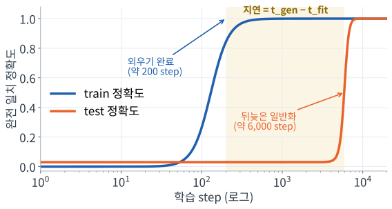
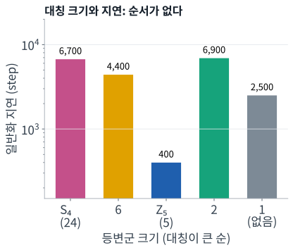
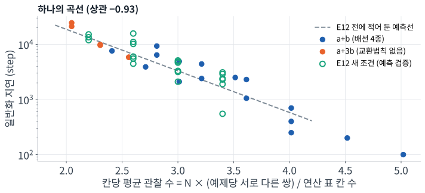

수열 변환 규칙 · 작은 Transformer · 지연된 일반화
Grokking의 지연을 정하는 것은
규칙의 대칭인가, 데이터의 정보량인가
같은 연산에 ‘배선’만 바꾼 규칙 가족으로 1,700회 이상의 학습을 비교한 통제 실험
김서혁 · 손영우 | ○○고등학교 | 지도교사 ○○○
1Grokking이란?
신경망이 학습 데이터를 먼저 외우고, 한참 뒤에야 갑자기 처음 보는 데이터까지 맞히게 되는(일반화) 현상이다. 2022년 OpenAI 연구진이 모듈러 덧셈에서 처음 보고했다.
외운 뒤 일반화까지 걸리는 시간을 지연이라 한다. 무엇이 이 지연을 길게, 또는 짧게 만드는지는 아직 잘 모른다.
우리의 관심
- 어떤 규칙은 왜 빨리, 어떤 규칙은 늦게 grokking하는가?
- 그 차이를 실행하기 전에 예측할 수 있는가?

우리 실험의 한 예(a+3b, 순환 이웃, train 1,280개). 측정 시점을 바탕으로 그린 개념도
2우리가 학습시킨 과제
1~50의 서로 다른 정수 5개로 된 수열을 받아, 각 칸을 자기 값 + 참조한 칸의 값(mod 50)으로 바꾼다.
yi = xi + x참조(i) (mod 50)
연산(덧셈)은 모두 같고, 어느 칸을 참조하는지(배선)만 다르다. 배선이 바뀌면 규칙의 대칭이 달라진다.
예: 오른쪽 이웃을 참조 (순환)
[12, 7, 33, 41, 5] → [19, 40, 24, 46, 17]
12+7, 7+33, 33+41=74→24, 41+5, 5+12
대칭(등변군): 입력 칸을 섞었을 때 출력도 똑같이 섞이게 하는 순서 바꾸기의 모임. 클수록 대칭이 크다.
순환 이웃등변군 5 (Z₅)
첫 칸 참조등변군 24 (S₄)
무작위 배선등변군 1 (대칭 없음)
화살표: 출력 칸 i가 참조하는 칸. 실제로는 이런 배선 13가지(등변군 크기 1·2·5·6·24)를 비교했다.
3연구 질문과 두 가설
연구 질문같은 연산을 배우는 규칙들 사이에서, grokking이 일어나는 데이터 양의 경계와 지연을 결정하는 것은 무엇인가?
가설 A · 대칭
규칙의 대칭(등변군)이 클수록 구조가 단순하므로, 더 적은 데이터로 더 빨리 일반화할 것이다.
가설 B · 정보량
예제 하나가 연산 표(덧셈 표)에 대해 주는 서로 다른 정보의 수가 많을수록 빨리 일반화할 것이다.
두 가설을 가르는 방법. 덧셈 a+b는 교환법칙 때문에 배선에 따라 같은 쌍을 두 번 주기도 한다. 연산을 a+3b로 바꾸면 대칭은 그대로인데 모든 배선의 정보량이 같아진다. 이때 배선 간 차이가 남으면 가설 A, 사라지면 가설 B.
4미리 보는 핵심 결과
대칭은 지연을 설명하지 못했고, 연산 표의 한 칸을 train에서 몇 번 보는가(칸당 관찰 수)가 서로 다른 규칙들을 하나의 곡선 위에 모았다.

